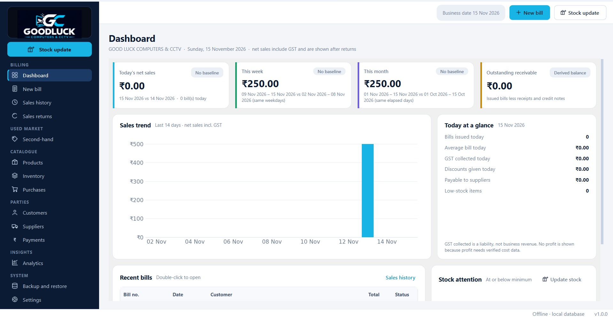
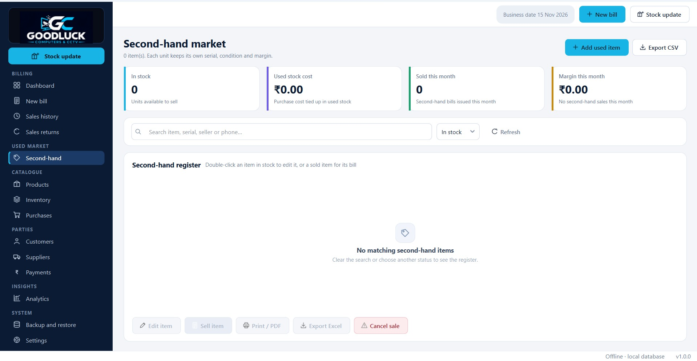
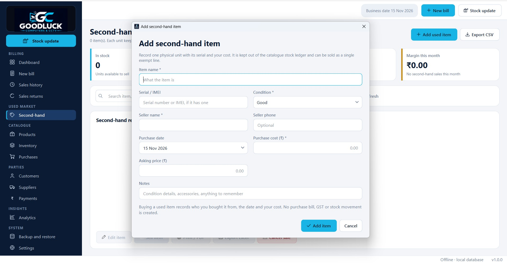
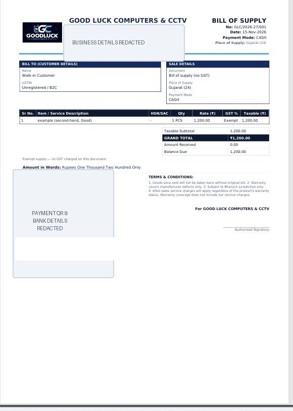

A system shaped around the shop's workflow.
Good Luck Computers needed more than a basic invoice generator. The application brings billing, product and inventory records, purchases, customer and supplier information, payments and sales analytics into a single desktop interface. It also includes a dedicated second-hand market, where each used unit is tracked separately from regular catalogue stock.




Core modules
A separate workflow for second-hand items
The second-hand market is designed for individual physical units. The shop can record an item's name, serial or IMEI, condition, seller details, purchase date, cost, asking price and notes. The used stock register supports search and status filtering, while the sales flow captures the sale price, date, buyer and payment mode.
The application calculates the unit's margin as sale price minus purchase cost. For this workflow, it issues a separate bill of supply with the selected exempt line treatment; it is kept outside the regular catalogue stock ledger.
Designed for practical day-to-day use
The project reflects Nexora's approach: understand how a business actually operates, then shape the software around its records and workflows rather than forcing it into a generic template.
Discuss a system for my business ↗Your workflow can shape the software.
Tell Nexora about your business process and the tools you need.